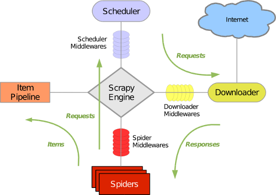
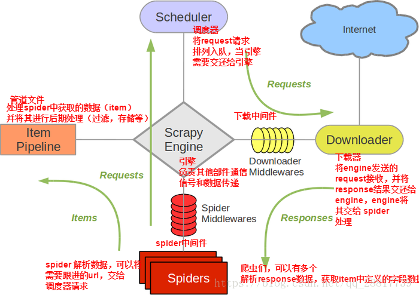

1.什么是Scrapy?
Scrapy是一个为了爬取网站数据，提取结构性数据而编写的应用框架，非常出名，非常强悍。所谓的框架就是一个已经被集成了各种功能（高性能异步下载，队列，分布式，解析，持久化等）的具有很强通用性的项目模板。对于框架的学习，重点是要学习其框架的特性、各个功能的用法即可
安装:(windows版本)
pip3 install wheel
下载twisted http://www.lfd.uci.edu/~gohlke/pythonlibs/#twisted
进入下载目录，执行 pip3 install Twisted‑17.1.0‑cp35‑cp35m‑win_amd64.whl
pip3 install pywin32
pip3 install scrapy
基本命令
- 创建项目:scrapy startproject 项目名称
- 创建爬虫应用程序: scrapy genspider 应用名称 爬取网页的起始url
- 执行爬虫程序：scrapy crawl 应用名称
2.scrapy框架持久化存储
- 基于终端指令的持久化存储
- 基于管道的持久化存储
基于终端指令的持久化存储
- 保证爬虫文件的parse方法中有可迭代类型对象（通常为列表or字典）的返回，该返回值可以通过终端指令的形式写入指定格式的文件中进行持久化操作。
- 执行输出指定格式进行存储:将爬取到的数据写入不同格式的文件中存储
- scrapy crawl 爬虫名称 -o xxx.json
- scrapy crawl 爬虫名称 -o xxx.xml
- scrapy crawl 爬虫名称 -o xxx.csv
基于管道的持久化存储
持久化流程
- 爬虫文件爬取到数据后,需要将数据封装到items对象中
- 使用yield 关键字将items对象提交给pipelines管道进行持久化存储
- 在管道中的process_item方法中接收爬虫文件提交过来的item对象,然后编写持久化存储的代码将item对象中存储的数据进行持久化存储
- settings.py 配置文件中开启管道
3.scrapy框架之递归解析和post请求
递归解析
def parse(self, response):
div_list=response.xpath('//*[@id="content-left"]/div')
for div in div_list:
#//*[@id="qiushi_tag_120996995"]/div[1]/a[2]/h2
author=div.xpath('.//div[@class="author clearfix"]//h2/text()').extract_first()
author=author.strip('\n')
content=div.xpath('.//div[@class="content"]/span/text()').extract_first()
content=content.strip('\n')
item=QiushibaikeItem()
item['author']=author
item['content']=content
yield item #提交item到管道进行持久化
#爬取所有页码数据
if self.pageNum <= 13: #一共爬取13页（共13页）
self.pageNum += 1
url = format(self.url % self.pageNum)
#递归爬取数据：callback参数的值为回调函数（将url请求后，得到的相应数据继续进行parse解析），递归调用parse函数
yield scrapy.Request(url=url,callback=self.parse)
五大核心组件工作流程

- 引擎(scrapy)
用来处理整个系统的数据流处理,触发事务(框架核心)
- 调度器(Scheduler)
用来接受引擎发过来的请求, 压入队列中, 并在引擎再次请求的时候返回. 可以想像成一个URL（抓取网页的网址或者说是链接）的优先队列, 由它来决定下一个要抓取的网址是什么, 同时去除重复的网址
- 下载器(Downloader)
用于下载网页内容, 并将网页内容返回给蜘蛛(Scrapy下载器是建立在twisted这个高效的异步模型上的)
- 爬虫(Spiders)
爬虫是主要干活的, 用于从特定的网页中提取自己需要的信息, 即所谓的实体(Item)。用户也可以从中提取出链接,让Scrapy继续抓取下一个页面
- 项目管道(Pipeline)
负责处理爬虫从网页中抽取的实体，主要的功能是持久化实体、验证实体的有效性、清除不需要的信息。当页面被爬虫解析后，将被发送到项目管道，并经过几个特定的次序处理数据
post请求
重写start_requests(self)方法,让其发起post请求
def start_requests(self):
#请求的url
post_url = 'http://fanyi.baidu.com/sug'
# post请求参数
formdata = {
'kw': 'wolf',
}
# 发送post请求
yield scrapy.FormRequest(url=post_url, formdata=formdata, callback=self.parse)
4.scrapy框架的日志等级,请求参数和提高爬取效率
日志信息的种类:
- ERROR:一般错误
- WARNING:警告
- INFO:一般信息
- DEBUG:调试信息
设置日志信息指定输出
在settings.py配置文件中加入
- LOG_LEVEL = ‘指定日志信息种类’即可。
- LOG_FILE = 'log.txt'则表示将日志信息写入到指定文件中进行存储。
请求传参
yield scrapy.Request(url=item['detail_url'],callback=self.parse_detail,meta={'item':item}) # 把item传递给下一个数据处理函数
def parse_detail(self,response):
# 通过response获取item
item = response.meta['item']
提高scrapy的爬取效率
增加并发：
默认scrapy开启的并发线程为32个，可以适当进行增加。在settings配置文件中修改CONCURRENT_REQUESTS = 100值为100,并发设置成了为100。
降低日志级别：
在运行scrapy时，会有大量日志信息的输出，为了减少CPU的使用率。可以设置log输出信息为INFO或者ERROR即可。在配置文件中编写：LOG_LEVEL = ‘INFO’
禁止cookie：
如果不是真的需要cookie，则在scrapy爬取数据时可以进制cookie从而减少CPU的使用率，提升爬取效率。在配置文件中编写：COOKIES_ENABLED = False
禁止重试：
对失败的HTTP进行重新请求（重试）会减慢爬取速度，因此可以禁止重试。在配置文件中编写：RETRY_ENABLED = False
减少下载超时：
如果对一个非常慢的链接进行爬取，减少下载超时可以能让卡住的链接快速被放弃，从而提升效率。在配置文件中进行编写：DOWNLOAD_TIMEOUT = 10 超时时间为10s
5.UA池和代理池
Downloader Middlewares(下载中间件)

Downloader Middlewares(下载中间件) 位于scrapy引擎和下载器之间的一层组件。
作用:
- 引擎将请求传递给下载器过程中， 下载中间件可以对请求进行一系列处理。比如设置请求的 User-Agent，设置代理等
- 在下载器完成将Response传递给引擎中，下载中间件可以对响应进行一系列处理。比如进行gzip解压等。
我们主要使用下载中间件处理请求，一般会对请求设置随机的User-Agent ，设置随机的代理。目的在于防止爬取网站的反爬虫策略。
UA池:User-Agent池
作用:尽可能多的将scrapy工程中的请求伪装成不同类型的浏览器身份。
操作流程:
- 1.在下载中间件中拦截请求
- 2.将拦截到的请求的请求头信息中的UA进行篡改伪装
- 3.在配置文件中开启下载中间件
user_agent_list = [
"Mozilla/5.0 (Windows NT 6.1; WOW64) AppleWebKit/537.1 "
"(KHTML, like Gecko) Chrome/22.0.1207.1 Safari/537.1",
"Mozilla/5.0 (X11; CrOS i686 2268.111.0) AppleWebKit/536.11 "
"(KHTML, like Gecko) Chrome/20.0.1132.57 Safari/536.11",
"Mozilla/5.0 (Windows NT 6.1; WOW64) AppleWebKit/536.6 "
"(KHTML, like Gecko) Chrome/20.0.1092.0 Safari/536.6",
"Mozilla/5.0 (Windows NT 6.2) AppleWebKit/536.6 "
"(KHTML, like Gecko) Chrome/20.0.1090.0 Safari/536.6",
"Mozilla/5.0 (Windows NT 6.2; WOW64) AppleWebKit/537.1 "
"(KHTML, like Gecko) Chrome/19.77.34.5 Safari/537.1",
"Mozilla/5.0 (X11; Linux x86_64) AppleWebKit/536.5 "
"(KHTML, like Gecko) Chrome/19.0.1084.9 Safari/536.5",
"Mozilla/5.0 (Windows NT 6.0) AppleWebKit/536.5 "
"(KHTML, like Gecko) Chrome/19.0.1084.36 Safari/536.5",
"Mozilla/5.0 (Windows NT 6.1; WOW64) AppleWebKit/536.3 "
"(KHTML, like Gecko) Chrome/19.0.1063.0 Safari/536.3",
"Mozilla/5.0 (Windows NT 5.1) AppleWebKit/536.3 "
"(KHTML, like Gecko) Chrome/19.0.1063.0 Safari/536.3",
"Mozilla/5.0 (Macintosh; Intel Mac OS X 10_8_0) AppleWebKit/536.3 "
"(KHTML, like Gecko) Chrome/19.0.1063.0 Safari/536.3",
"Mozilla/5.0 (Windows NT 6.2) AppleWebKit/536.3 "
"(KHTML, like Gecko) Chrome/19.0.1062.0 Safari/536.3",
"Mozilla/5.0 (Windows NT 6.1; WOW64) AppleWebKit/536.3 "
"(KHTML, like Gecko) Chrome/19.0.1062.0 Safari/536.3",
"Mozilla/5.0 (Windows NT 6.2) AppleWebKit/536.3 "
"(KHTML, like Gecko) Chrome/19.0.1061.1 Safari/536.3",
"Mozilla/5.0 (Windows NT 6.1; WOW64) AppleWebKit/536.3 "
"(KHTML, like Gecko) Chrome/19.0.1061.1 Safari/536.3",
"Mozilla/5.0 (Windows NT 6.1) AppleWebKit/536.3 "
"(KHTML, like Gecko) Chrome/19.0.1061.1 Safari/536.3",
"Mozilla/5.0 (Windows NT 6.2) AppleWebKit/536.3 "
"(KHTML, like Gecko) Chrome/19.0.1061.0 Safari/536.3",
"Mozilla/5.0 (X11; Linux x86_64) AppleWebKit/535.24 "
"(KHTML, like Gecko) Chrome/19.0.1055.1 Safari/535.24",
"Mozilla/5.0 (Windows NT 6.2; WOW64) AppleWebKit/535.24 "
"(KHTML, like Gecko) Chrome/19.0.1055.1 Safari/535.24"
]
import random
from scrapy.contrib.downloadermiddleware.useragent import UserAgentMiddleware
UA池代码的编写（单独给UA池封装一个下载中间件的一个类）
class RandomUserAgent(UserAgentMiddleware):
def process_request(self, request, spider):
从列表中随机抽选出一个ua值
ua = random.choice(user_agent_list)
ua值进行当前拦截到请求的ua的写入操作
request.headers['User-Agent'] = ua
代理池
作用:尽可能多的将scrapy工程中的请求的IP设置成不同的
操作流程:
- 1.在下载中间件中拦截请求
- 2.将拦截到的请求的IP修改成某一代理IP
- 3.在配置文件中开启下载中间件
批量对拦截到的请求进行ip更换
单独封装下载中间件类
class Proxy(object):
def process_request(self, request, spider):
对拦截到请求的url进行判断（协议头到底是http还是https）
request.url返回值：http://www.xxx.com
h = request.url.split(':')[0] #请求的协议头
if h == 'https':
ip = random.choice(PROXY_https)
request.meta['proxy'] = 'https://'+ip
else:
ip = random.choice(PROXY_http)
request.meta['proxy'] = 'http://' + ip
#可被选用的代理IP
PROXY_http = [
'153.180.102.104:80',
'195.208.131.189:56055',
]
PROXY_https = [
'120.83.49.90:9000',
'95.189.112.214:35508',
]
6.scrapy中的selenium的应用
selenium在scrapy中的使用流程
- 重写爬虫文件的构造方法，在该方法中使用selenium实例化一个浏览器对象（因为浏览器对象只需要被实例化一次）
- 重写爬虫文件的closed(self,spider)方法，在其内部关闭浏览器对象。该方法是在爬虫结束时被调用
- 重写下载中间件的process_response方法，让该方法对响应对象进行拦截，并篡改response中存储的页面数据
- 在配置文件中开启下载中间件
爬虫代码
class WangyiSpider(RedisSpider):
name = 'wangyi'
#allowed_domains = ['www.xxxx.com']
start_urls = ['https://news.163.com']
def __init__(self):
实例化一个浏览器对象(实例化一次)
self.bro = webdriver.Chrome()
必须在整个爬虫结束后，关闭浏览器
def closed(self,spider):
print('爬虫结束')
self.bro.quit()
中间件文件
from scrapy.http import HtmlResponse
参数介绍：
拦截到响应对象（下载器传递给Spider的响应对象）
request：响应对象对应的请求对象
response：拦截到的响应对象
spider：爬虫文件中对应的爬虫类的实例
def process_response(self, request, response, spider):
响应对象中存储页面数据的篡改
if request.url in['http://news.163.com/domestic/','http://news.163.com/world/','http://news.163.com/air/','http://war.163.com/']:
spider.bro.get(url=request.url)
js = 'window.scrollTo(0,document.body.scrollHeight)'
spider.bro.execute_script(js)
time.sleep(2) 一定要给与浏览器一定的缓冲加载数据的时间
页面数据就是包含了动态加载出来的新闻数据对应的页面数据
page_text = spider.bro.page_source
篡改响应对象
return HtmlResponse(url=spider.bro.current_url,body=page_text,encoding='utf-8',request=request)
else:
return response
配置文件
DOWNLOADER_MIDDLEWARES = {
'wangyiPro.middlewares.WangyiproDownloaderMiddleware': 543,
}
7.CrawlSpider的基本使用
- CrawlSpider简介
- CrawlSpider使用
- 基于CrawlSpider爬虫文件的创建
- 链接提取器
- 规则提取器
简介
CrawlSpider其实是Spider的一个子类，除了继承到Spider的特性和功能外，还派生除了其自己独有的更加强大的特性和功能。其中最显著的功能就是”LinkExtractors链接提取器“。Spider是所有爬虫的基类，其设计原则只是为了爬取start_url列表中网页，而从爬取到的网页中提取出的url进行继续的爬取工作使用CrawlSpider更合适。
使用
- 创建scrapy工程:scrapy startproject projectName
- 创建爬虫文件:scrapy genspider -t crawl spiderName www.xxx.com
- 此指令对比以前的指令多了 "-t crawl"，表示创建的爬虫文件是基于CrawlSpider这个类的，而不再是Spider这个基类
- 观察生成的爬虫文件
LinkExtractor :顾名思义,链接提取器
LinkExtractor(
allow=r'Items/'， 满足括号中“正则表达式”的值会被提取，如果为空，则全部匹配。
deny=xxx, 满足正则表达式的则不会被提取。
restrict_xpaths=xxx, 满足xpath表达式的值会被提取
restrict_css=xxx, 满足css表达式的值会被提取
deny_domains=xxx, 不会被提取的链接的domains。
)
作用:提取response中符合规则的连接
8.Rule : 规则解析器。
Rule : 规则解析器 ,根据链接提取器中提取到的链接，根据指定规则提取解析器链接网页中的内容。
Rule(LinkExtractor(allow=r'Items/'), callback='parse_item', follow=True)
参数介绍:
- 参数1：指定链接提取器
- 参数2：指定规则解析器解析数据的规则（回调函数）
- 参数3：是否将链接提取器继续作用到链接提取器提取出的链接网页中。当callback为None,参数3的默认值为true。
rules=( ):指定不同规则解析器。一个Rule对象表示一种提取规则。
CrawlSpider整体爬取流程：
- 1.爬虫文件首先根据起始url，获取该url的网页内容
- 2.链接提取器会根据指定提取规则将步骤1中网页内容中的链接进行提取
- 3.规则解析器会根据指定解析规则将链接提取器中提取到的链接中的网页内容根据指定的规则进行解析
- 4.将解析数据封装到item中，然后提交给管道进行持久化存储
9.基于scrapy-redis两种形式的分布式爬虫
1.scrapy框架是否可以自己实现分布式
不可以,原因有二
- 1.因为多台机器上部署的scrapy会各自拥有各自的调度器，这样就使得多台机器无法分配start_urls列表中的url。（多台机器无法共享同一个调度器）
- 2.多台机器爬取到的数据无法通过同一个管道对数据进行统一的数据持久出存储。（多台机器无法共享同一个管道）
2.基于scrapy-redis组件的分布式爬虫
- scrapy-redis组件中为我们封装好了可以被多台机器共享的调度器和管道，我们可以直接使用并实现分布式数据爬取
- 实现方式
- 基于该组件的RedisSpider类
- 基于该组件的RedisCrawlSpider类
3.分布式实现流程:上述两种方式的分布式实现流程是统一的
-
1.下载scrapy-redis组件:pip install scrapy-redis
-
2.redis配置文件的配置：
- 注释:bind 127.0.0.1，表示可以让其他ip访问redis
- 将yes改为No:protected-mode no:表示可以让其他ip操作redis
-
3.修改爬虫文件中的相关代码
- 将爬虫类的父类修改成基于RedisSpider或者RedisCrawlSpider。注意：如果原始爬虫文件是基于Spider的，则应该将父类修改成RedisSpider，如果原始爬虫文件是基于CrawlSpider的，则应该将其父类修改成RedisCrawlSpider。
- 注释或者删除start_urls列表，切加入redis_key属性，属性值为scrpy-redis组件中调度器队列的名称
-
-
在配置文件中进行相关配置，开启使用scrapy-redis组件中封装好的管道
python ITEM_PIPELINES = { 'scrapy_redis.pipelines.RedisPipeline': 400 }
-
-
5.在配置文件中进行相关配置，开启使用scrapy-redis组件中封装好的调度器
使用scrapy-redis组件的去重队列
DUPEFILTER_CLASS = "scrapy_redis.dupefilter.RFPDupeFilter"
使用scrapy-redis组件自己的调度器
SCHEDULER = "scrapy_redis.scheduler.Scheduler"
是否允许暂停
SCHEDULER_PERSIST = True
- 6.在配置文件中进行爬虫程序链接redis的配置：
REDIS_HOST = 'redis服务的ip地址'
REDIS_PORT = 6379
REDIS_ENCODING = ‘utf-8’
REDIS_PARAMS = {‘password’:’123456’}
- 7.开启redis服务器：redis-server 配置文件
- 8 开启redis客户端：redis-cli
- 9 运行爬虫文件：scrapy runspider SpiderFile
- 10 向调度器队列中扔入一个起始url（在redis客户端中操作）：lpush redis_key属性值 起始url